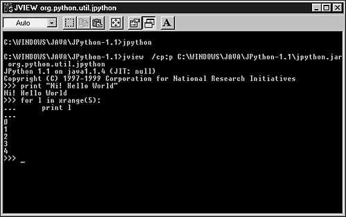

| < BACK | Make Note | Bookmark | CONTINUE > |
The Interpreter
The JPython installation places several files on your system, including a set of modules, some sample programs, an application called jpythonc (which we will see later), and the JPython interpreter.
The JPython interpreter looks very similar to the CPython interpreter (see Figure 18.2). However, jpython is not a binary file, but a short script (or batch file, depending on your system) that invokes your local JVM, sets the Java property install.path to an appropriate value, and then runs the Java class file org.python.util.jpython.
Figure 18.2. If you glance at this screen, you might be confused whether JPython or CPython is running because both interpreters do look alike.
The following syntax shows the possible options that you can pass to JPython when invoking it from the shell. A list of options is shown in Table 18.1.
jpython [options] [-jar jar | -c cmd | file | -] [args]
Because jpython is not a binary executable, but a simple script, you have to add the following line to the top of your JPython programs (only if you have a UNIX system), in order to make them executable.
#! /usr/bin/env jpython
Using something like #!/usr/bin/jpython/jpython will not work because this syntax requires jpython to be a binary executable (which is not the case).
You also need to make sure that jpython's directory is registered on your PATH variable.
Now let's take a look at the following code:
class jhello:
def main(argv):
print "Hello Python world!"
myapp=jhello()
myapp.main()
After saving this code in a file, called jhello.py, you can execute it by typing at your OS prompt:
jpython jhello.py
| Last updated on 1/30/2002 Python Developer's Handbook, © 2002 Sams Publishing |
| < BACK | Make Note | Bookmark | CONTINUE > |